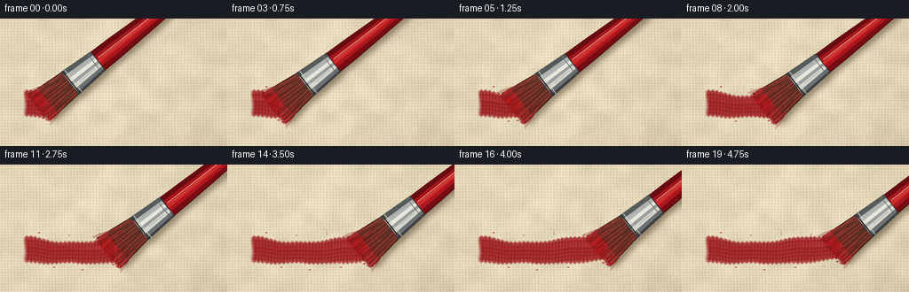
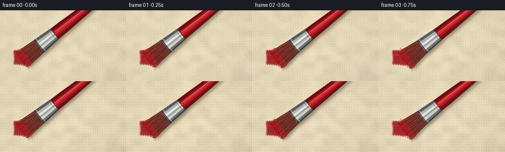

CODING AGENTS AS PIXEL WORLD MODELS
traex/GPT-5.6-Sol · mechanics_0046
点击播放 · 原生 RGB 像素
逐轮保存的候选
回放视频、检查图与代码变化。
每份候选均可单独播放。实际图片检查记录在下方工具轨迹中。
候选 01播放与检查图
点击播放 · 原生 RGB 像素


展开代码变化
--- 上一保存版本
+++ 本次保存版本
@@ -0,0 +1,316 @@
+"""Procedurally render a macro shot of a brush painting rough canvas.
+
+The animation is intentionally deterministic. It uses only numpy and PIL,
+renders at 3x resolution for antialiasing, then hands the RGB frame tensor to
+the required artifact_io helper.
+"""
+
+from pathlib import Path
+import math
+
+import numpy as np
+from PIL import Image, ImageDraw, ImageFilter
+
+import artifact_io
+
+
+W, H, N = 256, 144, 20
+S = 3
+SW, SH = W * S, H * S
+ROOT = Path(__file__).resolve().parent
+
+
+def smoothstep(x):
+ x = np.clip(x, 0.0, 1.0)
+ return x * x * (3.0 - 2.0 * x)
+
+
+def noise_field(rng, small_w, small_h, resample=Image.Resampling.BICUBIC):
+ """A static coherent noise field in [0, 1]."""
+ values = rng.integers(0, 256, (small_h, small_w), dtype=np.uint8)
+ image = Image.fromarray(values, "L").resize((SW, SH), resample)
+ return np.asarray(image, dtype=np.float32) / 255.0
+
+
+def make_canvas():
+ rng = np.random.default_rng(4601)
+ yy, xx = np.mgrid[0:SH, 0:SW].astype(np.float32)
+ x, y = xx / S, yy / S
+ low = noise_field(rng, 18, 11)
+ fine = noise_field(rng, 130, 74)
+
+ # Interlocking warp and weft. Slight phase modulation keeps the cloth from
+ # looking like a computer-perfect grid.
+ warp_phase = 2 * np.pi * (x / 3.55 + 0.055 * np.sin(y / 8.1))
+ weft_phase = 2 * np.pi * (y / 3.25 + 0.065 * np.sin(x / 10.7))
+ warp = np.cos(warp_phase)
+ weft = np.cos(weft_phase)
+ crossings = warp * weft
+ light = 5.2 * warp + 4.5 * weft + 2.0 * crossings
+ rough = (low - 0.5) * 13.0 + (fine - 0.5) * 6.0
+ vignette = -8.0 * (((x - 126) / 150) ** 2 + ((y - 72) / 100) ** 2)
+ diagonal_light = 5.0 * (1.0 - x / W) + 3.0 * (1.0 - y / H)
+
+ base = np.empty((SH, SW, 3), dtype=np.float32)
+ for channel, value in enumerate((224, 211, 181)):
+ base[..., channel] = value + light + rough + vignette + diagonal_light
+ base[..., 0] += 2.5 * weft
+ base[..., 2] -= 1.8 * warp
+
+ # Narrow highlights and occlusion at raised yarn edges add real depth.
+ raised_v = np.maximum(0, np.cos(warp_phase - 0.55)) ** 12
+ raised_h = np.maximum(0, np.cos(weft_phase - 0.55)) ** 12
+ pores = np.maximum(0, -crossings) ** 7
+ base += (raised_v + raised_h)[..., None] * np.array([8.0, 7.0, 4.0])
+ base -= pores[..., None] * np.array([12.0, 12.0, 10.0])
+ return np.uint8(np.clip(base, 0, 255)), (low, fine, warp, weft)
+
+
+CANVAS, TEXTURE = make_canvas()
+
+
+def paint_layer(extent, pressure):
+ """Render the already deposited paint up to the moving brush tip."""
+ low, fine, warp, weft = TEXTURE
+ yy, xx = np.mgrid[0:SH, 0:SW].astype(np.float32)
+ x, y = xx / S, yy / S
+ center = 97.0 + 2.3 * np.sin((x - 43.0) / 28.0) + 0.55 * np.sin(x / 7.5)
+ edge_wobble = 1.55 * (low - 0.5) + 0.75 * np.sin(x * 1.31)
+ halfwidth = 13.2 + 1.2 * np.sin(x / 17.0) + edge_wobble
+ distance = np.abs(y - center)
+ body = smoothstep((halfwidth - distance + 1.15) / 2.25)
+
+ # Ragged beginning and a soft, paint-loaded advancing edge.
+ start = smoothstep((x - 26.0 + 2.2 * low) / 5.5)
+ finish = smoothstep((extent + 3.2 + 3.2 * (low - 0.5) - x) / 4.2)
+ alpha = body * start * finish
+
+ # The canvas weave remains legible through thin valleys between bristle
+ # tracks, especially at the feathered edges.
+ tracks = (0.5 + 0.5 * np.cos((y - center) * 1.53 + 0.18 * np.sin(x / 5.0))) ** 10
+ weave_valleys = (np.maximum(0, -warp) ** 8) * (0.12 + 0.24 * (distance / 15.0))
+ alpha *= 0.93 - 0.14 * tracks - weave_valleys
+ alpha *= 0.78 + 0.22 * smoothstep((halfwidth - distance) / 4.0)
+ alpha = np.clip(alpha, 0, 0.96)
+
+ # Rich wet paint with dark furrows, raised red ridges, and a narrow glossy
+ # reflection. Freshness increases near the moving edge.
+ fresh = smoothstep((x - (extent - 55.0)) / 42.0) * finish
+ ridge = (0.5 + 0.5 * np.sin((y - center) * 1.52 + 0.2 * np.sin(x / 6.0))) ** 8
+ gloss = np.exp(-((y - center + 5.3) / 1.15) ** 2) * (0.35 + 0.65 * fresh)
+ pigment = np.zeros((SH, SW, 3), dtype=np.float32)
+ pigment[..., 0] = 146 + 27 * ridge + 25 * gloss + 5 * fine
+ pigment[..., 1] = 18 + 7 * ridge + 18 * gloss
+ pigment[..., 2] = 23 + 6 * ridge + 12 * gloss
+ pigment -= tracks[..., None] * np.array([16.0, 7.0, 6.0])
+
+ output = CANVAS.astype(np.float32) * (1.0 - alpha[..., None])
+ output += pigment * alpha[..., None]
+ return np.uint8(np.clip(output, 0, 255))
+
+
+def poly(draw, points, fill):
+ draw.polygon([(round(x * S), round(y * S)) for x, y in points], fill=fill)
+
+
+def line(draw, points, fill, width=1.0, joint="curve"):
+ draw.line([(round(x * S), round(y * S)) for x, y in points], fill=fill,
+ width=max(1, round(width * S)), joint=joint)
+
+
+def bezier(a, b, c, d, count=18):
+ result = []
+ for t in np.linspace(0, 1, count):
+ q = 1 - t
+ result.append((q ** 3 * a[0] + 3 * q * q * t * b[0] + 3 * q * t * t * c[0] + t ** 3 * d[0],
+ q ** 3 * a[1] + 3 * q * q * t * b[1] + 3 * q * t * t * c[1] + t ** 3 * d[1]))
+ return result
+
+
+def render_brush(background, cx, cy, pressure, frame_index):
+ """Draw a red handled brush with visibly bent, compressed bristles."""
+ # Brush axis rises to the upper-right; n spans the width of the brush.
+ angle = math.radians(-38.5 + 0.7 * math.sin(frame_index * 0.29))
+ u = np.array([math.cos(angle), math.sin(angle)])
+ n = np.array([-u[1], u[0]])
+ C = np.array([cx, cy])
+
+ def P(d, off):
+ p = C + u * d + n * off
+ return float(p[0]), float(p[1])
+
+ tip_half = 15.5 + 5.3 * pressure
+ root_half = 14.7
+
+ # Paint buildup and a fine dark contact line sit beneath the bristles.
+ wet = Image.new("RGBA", (SW, SH), (0, 0, 0, 0))
+ wd = ImageDraw.Draw(wet, "RGBA")
+ p0, p1 = P(-5.7, -tip_half), P(-5.7, tip_half)
+ line(wd, [p0, p1], (102, 8, 14, 125), 2.4)
+ for k in range(9):
+ off = -tip_half + (2 * tip_half) * (k + 0.5) / 9
+ q = P(-7.5 - 1.4 * math.sin(k * 2.1), off)
+ r = 1.0 + 0.45 * (k % 3)
+ wd.ellipse(((q[0] - r) * S, (q[1] - r * .55) * S,
+ (q[0] + r) * S, (q[1] + r * .55) * S), fill=(177, 20, 27, 165))
+ background = Image.alpha_composite(background.convert("RGBA"), wet)
+
+ # A coherent, blurred cast shadow anchors the complete tool to the cloth.
+ shadow_mask = Image.new("L", (SW, SH), 0)
+ sd = ImageDraw.Draw(shadow_mask)
+ shadow_shapes = [
+ [P(0, -tip_half), P(43, -root_half), P(43, root_half), P(0, tip_half)],
+ [P(40, -16), P(80, -13.5), P(80, 13.5), P(40, 16)],
+ [P(77, -13), P(195, -8.5), P(195, 8.5), P(77, 13)],
+ ]
+ for shape in shadow_shapes:
+ shifted = [((x + 3.2) * S, (y + 5.2) * S) for x, y in shape]
+ sd.polygon(shifted, fill=112)
+ shadow = Image.new("RGBA", (SW, SH), (55, 35, 20, 0))
+ shadow.putalpha(shadow_mask.filter(ImageFilter.GaussianBlur(3.0 * S)))
+ background = Image.alpha_composite(background, shadow)
+
+ tool = Image.new("RGBA", (SW, SH), (0, 0, 0, 0))
+ d = ImageDraw.Draw(tool, "RGBA")
+
+ # Lacquered red handle. Color strips across its rounded cross-section make
+ # it read as a cylinder rather than a flat polygon.
+ handle_stations = [(76, 13.4), (104, 12.7), (145, 10.8), (202, 8.0)]
+ outer = [P(ds, -hw) for ds, hw in handle_stations]
+ outer += [P(ds, hw) for ds, hw in reversed(handle_stations)]
+ poly(d, outer, (91, 12, 17, 255))
+ bands = [(-1.0, -0.55, (103, 12, 18, 255)),
+ (-0.55, -0.15, (161, 21, 27, 255)),
+ (-0.15, 0.20, (205, 42, 43, 255)),
+ (0.20, 0.52, (171, 22, 28, 255)),
+ (0.52, 0.88, (119, 12, 20, 255))]
+ for lo, hi, color in bands:
+ a = [P(ds, hw * lo) for ds, hw in handle_stations]
+ b = [P(ds, hw * hi) for ds, hw in reversed(handle_stations)]
+ poly(d, a + b, color)
+ line(d, [P(82, -3.1), P(151, -2.4), P(194, -1.7)], (255, 127, 116, 180), 1.0)
+ line(d, [P(87, -1.0), P(142, -0.7)], (255, 197, 181, 95), 0.45)
+
+ # Base bristle mass. Bands grade from tan at the crimp to paint-saturated
+ # crimson at the compressed tips.
+ poly(d, [P(43, -root_half - .9), P(43, root_half + .9),
+ P(-4.3, tip_half + 1.0), P(-4.3, -tip_half - 1.0)], (54, 25, 20, 255))
+ stations = np.linspace(-3.8, 43.0, 18)
+ for j in range(len(stations) - 1):
+ da, db = stations[j], stations[j + 1]
+ fa, fb = np.clip(da / 43, 0, 1), np.clip(db / 43, 0, 1)
+ ha = tip_half * (1 - fa) + root_half * fa
+ hb = tip_half * (1 - fb) + root_half * fb
+ mix = (fa + fb) * 0.5
+ # Dark natural bristles under a coat of red paint.
+ red = int(126 - 52 * mix)
+ green = int(24 + 25 * mix)
+ blue = int(22 + 12 * mix)
+ poly(d, [P(da, -ha), P(db, -hb), P(db, hb), P(da, ha)],
+ (red, green, blue, 255))
+
+ # Individual fibers curve backwards at the tip under friction. Their fixed
+ # random offsets preserve temporal coherence as the brush travels.
+ rng = np.random.default_rng(9917)
+ for k in range(58):
+ roff = -root_half + (2 * root_half) * (k + .4) / 58 + rng.uniform(-.32, .32)
+ toff = roff / root_half * tip_half + rng.normal(0, .75)
+ td = -4.3 - rng.uniform(0, 3.2) * pressure
+ start = P(42.5 + rng.uniform(-.8, .5), roff)
+ c1 = P(29 + rng.uniform(-2, 2), roff * 1.02)
+ c2 = P(9 + rng.uniform(-2, 2), toff * .92)
+ end = P(td, toff)
+ if k % 7 == 0:
+ color = (191, 63, 53, 235)
+ width = .62
+ elif k % 3 == 0:
+ color = (70, 31, 25, 220)
+ width = .52
+ else:
+ color = (111, 36, 30, 210)
+ width = .40
+ line(d, bezier(start, c1, c2, end, 16), color, width)
+ # Wet red coats the last few millimeters of every bristle.
+ q1 = P(7.0, toff * .96)
+ q2 = P(1.2, toff)
+ line(d, bezier(q1, P(4.8, toff), P(0, toff), end, 7),
+ (175 + (k % 4) * 5, 24, 28, 235), .52)
+
+ # A few splayed edge fibers make pressure and rough-surface interaction
+ # obvious in silhouette.
+ for side, seed in [(-1, 2), (1, 5)]:
+ for q in range(4):
+ roff = side * (root_half - 1.0 - q * .55)
+ toff = side * (tip_half + 1.8 + q * 1.15)
+ pts = bezier(P(40 - q, roff), P(24, roff * 1.04),
+ P(5, toff * .9), P(-6 - q * .7, toff), 20)
+ line(d, pts, (119 + q * 10, 29, 27, 220), .48)
+
+ # Polished steel ferrule drawn last so its lower lip cleanly crimps the
+ # bristles. Crosswise bands simulate curved metal reflections.
+ poly(d, [P(39, -16.3), P(80, -13.7), P(80, 13.7), P(39, 16.3)],
+ (55, 58, 59, 255))
+ ferrule_bands = [(-1.0, -.66, (86, 91, 91, 255)),
+ (-.66, -.30, (176, 181, 178, 255)),
+ (-.30, -.02, (231, 231, 219, 255)),
+ (-.02, .22, (153, 159, 158, 255)),
+ (.22, .55, (213, 214, 205, 255)),
+ (.55, .84, (108, 114, 115, 255)),
+ (.84, 1.0, (61, 64, 66, 255))]
+ for lo, hi, color in ferrule_bands:
+ poly(d, [P(40, 16 * lo), P(79, 13.4 * lo),
+ P(79, 13.4 * hi), P(40, 16 * hi)], color)
+ line(d, [P(41, -16), P(41, 16)], (45, 47, 48, 255), 1.3)
+ line(d, [P(44, -15.6), P(44, 15.6)], (237, 234, 219, 180), .65)
+ line(d, [P(75, -13.6), P(75, 13.6)], (67, 69, 70, 170), .65)
+ for off in (-8.8, 5.1, 10.2):
+ line(d, [P(50, off), P(71, off * .91)], (70, 75, 75, 105), .35)
+ # Thin red stains at the ferrule mouth.
+ line(d, [P(39.2, -12.5), P(39.2, -4.2)], (129, 20, 23, 210), 1.0)
+ line(d, [P(39.1, 7.5), P(39.1, 13.0)], (151, 20, 25, 190), .8)
+
+ return Image.alpha_composite(background, tool)
+
+
+def add_fixed_flecks(image, extent):
+ """Small paint catches on high canvas fibers appear behind the brush."""
+ overlay = Image.new("RGBA", (SW, SH), (0, 0, 0, 0))
+ d = ImageDraw.Draw(overlay, "RGBA")
+ flecks = [(44, 77, 1.0), (61, 116, .7), (78, 80, .65), (93, 119, .8),
+ (112, 78, .55), (128, 116, .7), (146, 79, .65), (160, 115, .5)]
+ for x, y, r in flecks:
+ if extent > x + 7:
+ d.ellipse(((x-r)*S, (y-r*.65)*S, (x+r)*S, (y+r*.65)*S),
+ fill=(139, 17, 22, 185))
+ return Image.alpha_composite(image, overlay)
+
+
+def make_frames():
+ frames = []
+ for i in range(N):
+ t = i / (N - 1)
+ progress = smoothstep(t)
+ cx = 48.0 + 126.0 * progress
+ cy = 97.0 + 2.25 * math.sin((cx - 43.0) / 28.0) + 0.55 * math.sin(cx / 7.5)
+ # The bristles settle, work under firm pressure, then relax very
+ # slightly near the end without losing contact with the canvas.
+ settle = smoothstep(min(1.0, t / .16))
+ release = 1.0 - 0.32 * smoothstep((t - .86) / .14)
+ pressure = (0.50 + 0.48 * settle) * release
+
+ rgb = paint_layer(cx + 1.5, pressure)
+ image = Image.fromarray(rgb, "RGB").convert("RGBA")
+ image = add_fixed_flecks(image, cx)
+ image = render_brush(image, cx, cy, pressure, i)
+ image = image.convert("RGB").resize((W, H), Image.Resampling.LANCZOS)
+ frames.append(np.asarray(image, dtype=np.uint8))
+ return np.stack(frames, axis=0)
+
+
+if __name__ == "__main__":
+ frames = make_frames()
+ assert frames.shape == (N, H, W, 3)
+ assert frames.dtype == np.uint8
+ artifact_io.save(frames, ROOT)
+ print(f"saved {len(frames)} RGB frames at {W}x{H}")
+
可观测工具轨迹
实际执行的命令与返回图片。
命令 1exit 0
/bin/bash -lc "cat prompt.txt && printf '\\n--- GENERATION_RULES.md ---\\n' && cat GENERATION_RULES.md && printf '\\n--- task_spec.json ---\\n' && cat task_spec.json"
命令 2exit 0
/bin/bash -lc "printf '%s\\n' '--- files ---'; find . -maxdepth 3 -type f -printf '%p\\n' | sort; printf '%s\\n' '--- binaries ---'; command -v ffmpeg || true; command -v python3 || true; command -v blender || true; command -v convert || true; command -v magick || true"
命令 3exit 0
/bin/bash -lc 'cat artifact_io.py'
命令 4exit 0
/bin/bash -lc "python3 - <<'PY' mods=['numpy','PIL','cv2','imageio','scipy'] for m in mods: try: x=__import__(m); print(m,'OK',getattr(x,'__version__','')) except Exception as e: print(m,'NO',e) PY"
命令 5exit 0
/bin/bash -lc 'python3 generate.py'
命令 6exit 0
/bin/bash -lc "python3 - <<'PY'
from pathlib import Path
import numpy as np
from PIL import Image
p=Path('.')
z=np.load('pixels.npz')['pixels']
frames=np.stack([np.asarray(Image.open(f'frames/{i:02d}.png').convert('RGB')) for i in range(20)])
print('pixels tensor:',z.shape,z.dtype,'range',int(z.min()),int(z.max()))
print('frames:',frames.shape,frames.dtype)
print('adjacent mean abs diffs:',np.round(np.abs(np.diff(frames.astype(float),axis=0)).mean((1,2,3)),2).tolist())
print('first-last MAD:',round(float(np.abs(frames[-1].astype(float)-frames[0]).mean()),2))
# Red-painted pixel estimate outside moving tool: red dominance and low green.
for i in [0,5,10,15,19]:
f=frames[i]
mask=(f[...,0]>95)&(f[...,0]>f[...,1]*2.5)&(f[...,1]<80)
print(i,'red-like pixels',int(mask.sum()),'bbox',end=' ')
ys,xs=np.nonzero(mask)
print((int(xs.min()),int(ys.min()),int(xs.max()),int(ys.max())))
print('artifacts:')
for x in ['generate.py','pixels.npz','inspection.png','transition_check.png','index.html']:
q=p/x; print(x,q.exists(),q.stat().st_size if q.exists() else '-')
PY"命令 7exit 0
/bin/bash -lc 'python3 -m py_compile generate.py && git status --short 2>/dev/null || true'
命令 8exit 0
/bin/bash -lc "python3 - <<'PY'
from PIL import Image
import numpy as np
# Compact luminance/chroma map of representative frames (non-semantic QA).
chars=' .:-=+*#%@'
for idx in (0,6,12,19):
a=np.asarray(Image.open(f'frames/{idx:02d}.png').resize((64,36))).astype(float)
# emphasize red-dominant regions as @ while retaining luminance texture
lum=.2126*a[:,:,0]+.7152*a[:,:,1]+.0722*a[:,:,2]
small=(lum/256*len(chars)).astype(int).clip(0,len(chars)-1)
red=(a[:,:,0]>a[:,:,1]*1.7)&(a[:,:,0]>90)
print(f'\\nFRAME {idx}')
for y in range(0,36,2):
print(''.join('R' if red[y,x] else chars[small[y,x]] for x in range(64)))
PY"保存候选 1 份；完成命令 8 次；可验证图片返回 0 张。原始 API 响应与完整日志保留在本地。